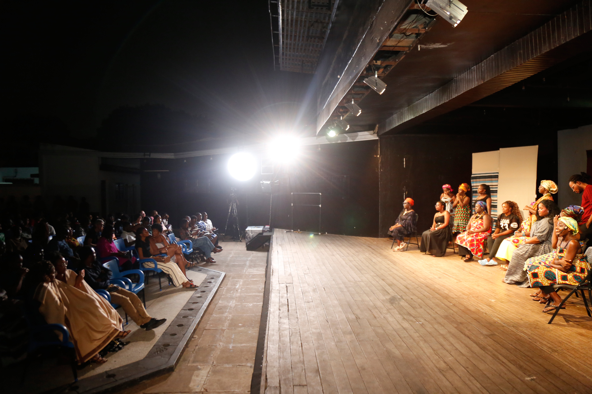

You See
Me

About
When You See Me is a research program and artistic project on the roles of individuals and communities in preventing gender-based violence and supporting survivors. It illuminates how people can make a difference when they recognize the severity of gender-based violence and see survivors, particularly girls and women, who are disproportionately affected. This initiative is community-centred and informed by research that demonstrates the pivotal role that ordinary people can play in addressing gender-based violence. It produces original research, artistic works, policy papers, and educational pamphlets. It also convenes policy workshops with relevant institutions in the state and civil society and provides training to stakeholders.
When You See Me is led by Peace A. Medie. She is Professor of Politics and International Relations at University of Bristol. Her award-winning research has shown how women’s movements can shape how the state responds to violence against women and how relatives and friends can influence survivors’ help-seeking behaviours.
This project has been funded by an Arts and Humanities Research Council grant since 2024. Peace A. Medie serves as principal investigators on the grant and Nana Akua Anyidoho and Ekua Ekumah of University of Ghana serve as co-investigators.
Earlier research on this theme was funded by a 2014 grant from the Harry Frank Guggenheim Foundation.
Our activities and outputs
Media coverage
Supported by